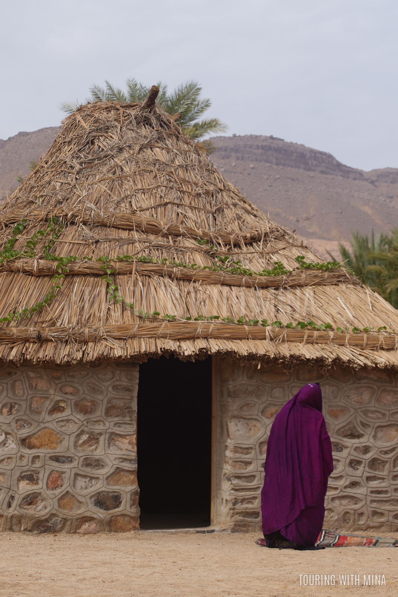
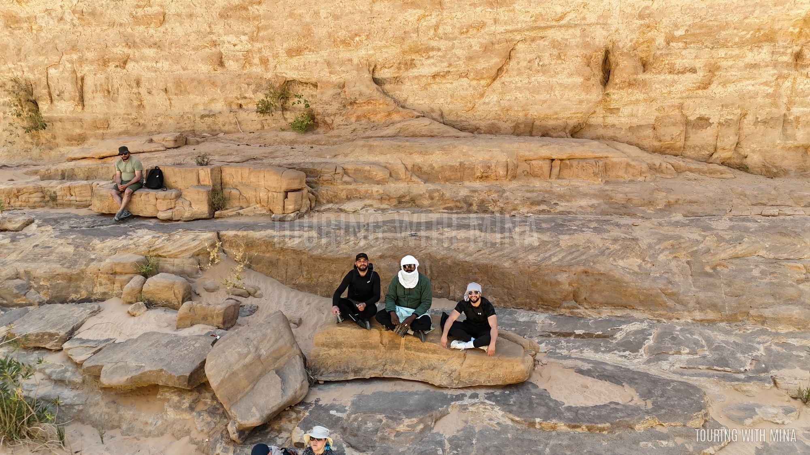

Les lieux que nous vous faisons vivre
Les lieux de nos circuits autour de Djanet, de l'oasis aux dunes rouges.


La porte du Tassili n'Ajjer
Djanet, l'oasis
Djanet est une oasis posée au pied du plateau du Tassili. Sa palmeraie suit l'oued, et ses vieux quartiers de pierre regardent la vallée depuis les hauteurs.
C'est ici que tout commence : on y arrive en avion, on y fait le marché, on y rencontre l'équipe avant de prendre la piste.


Dunes couleur braise et arches de grès
La Tadrart Rouge
Au sud-est de Djanet, la Tadrart est un massif de grès où le sable prend des teintes rouges et orangées. Les dunes viennent buter contre les falaises.
On y roule de canyon en canyon, on y marche pieds nus dans le sable, et l'on y dort au pied des dunes.


L'eau au milieu du désert
Ihrir
Ihrir est une vallée du Tassili où l'eau reste toute l'année. Des gueltas profondes se suivent entre les falaises, bordées de palmiers et de roseaux.
Le village vit de ses jardins. On s'y baigne, on y marche le long de l'eau et l'on partage le thé avec les habitants.


Le canyon caché
Essendilène
L'entrée se fait à pied, entre deux parois qui se resserrent. Lauriers-roses, acacias et sable clair accompagnent la marche jusqu'à la guelta du fond.
C'est une balade facile, à l'ombre, que les familles apprécient autant que les marcheurs.


La forêt de pierre et la vache qui pleure
Tikoubaouine et Adayk
Près de Djanet, l'érosion a sculpté le grès en formes étonnantes : arches, champignons de pierre et la célèbre sculpture de l'Éléphant.
Non loin, à Adayk, se trouve la fameuse gravure de la vache qui pleure, l'une des œuvres rupestres les plus connues de la région.
Votre voyage à Djanet commence par un message
Dites-nous vos dates et vos envies. Mina vous répond personnellement sous 24 heures.